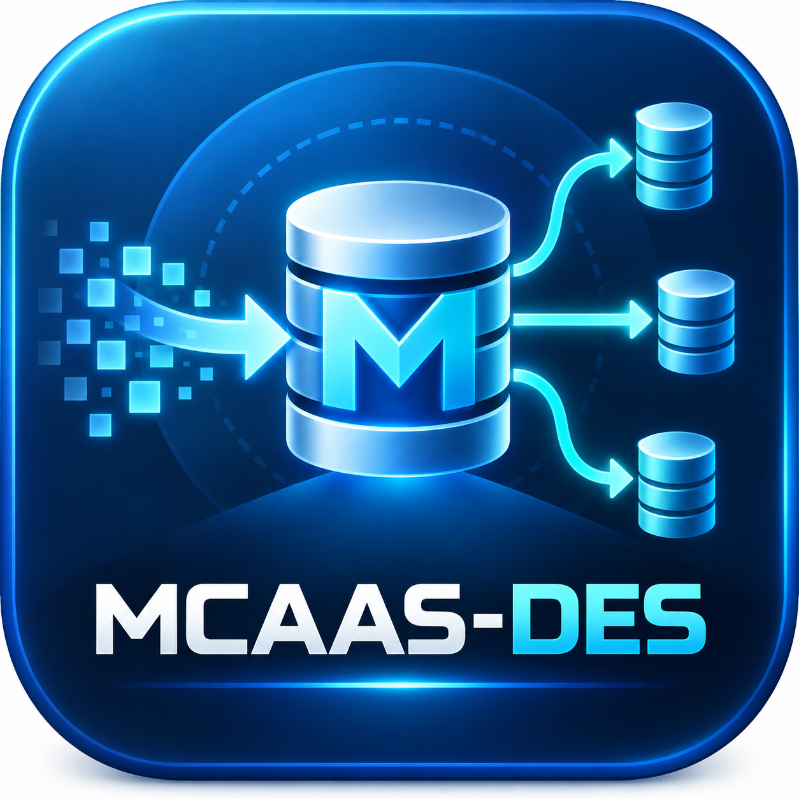

MCAAS - DES unifica extracción, detección de cambios y envío. Desde la versión 1.1.0 una sola instalación puede ejecutar varios trabajos de extracción, cada uno con su propia base origen, script SQL, nombre lógico y tabla destino.
Esto permite, por ejemplo, leer empleados desde varias empresas o sucursales de CONTPAQi, o combinar consultas de SQL Server, PostgreSQL y MySQL dentro del mismo servicio. Todos los cambios detectados se intentan reenviar a todos los destinos configurados.
Para distinguir datos con claves de negocio repetidas, MCAAS agrega automáticamente un campo de procedencia definido por ORIGIN_FIELD_NAME. Su valor es el EXTRACT_N_NAME del trabajo que produjo la fila.
empleado_id=25 de Empleados_Matriz y empleado_id=25 de Empleados_Sucursal_Norte son entidades distintas porque la identidad funcional incluye también el origen.La PK autoincremental del destino no se utiliza para localizar la fila a sincronizar. En modo normal, el UPDATE y la comprobación previa al INSERT usan la combinación origen + columnas clave del script.
| Componente | Responsabilidad |
|---|---|
| Extraction jobs | Unidades EXTRACT_N. Cada una encapsula nombre lógico, conexión origen y script SQL. |
| Extractor | Ejecuta cada SQL de lectura y obtiene columnas/filas sin requerir recompilación. |
| Origin tagger | Agrega a cada fila la columna configurada por ORIGIN_FIELD_NAME con valor EXTRACT_N_NAME. |
| Detector de cambios | Genera huellas SHA-256 de la identidad y del contenido completo de la fila. |
| Estado local | Guarda, por stream y destino, la última huella enviada. Un fallo en un destino no marca como enviado a los demás. |
| Sender | Construye operaciones parametrizadas para SQL Server, PostgreSQL o MySQL. |
| Failure tracker | Cuenta fallos dentro de una ventana de tiempo y activa la pausa persistente. |
| Monitor / Task Scheduler | Mantiene operación 24/7 y una consola de lectura desacoplada del núcleo. |
EXTRACT_1, EXTRACT_2, ... definidas en .env.origen + MCAAS_KEY_COLUMNS.DESTINATION_AUTO_ID_COLUMN.HISTORICO=true: cada versión nueva/modificada se inserta como nueva fila.MCAAS_KEY_COLUMNS.EXTRACT_N_NAME es único y estable.ORIGIN_FIELD_NAME.En destinos normales se recomienda una restricción o índice único sobre la identidad funcional. Ejemplo PostgreSQL:
CREATE UNIQUE INDEX ux_empleados_origen ON empleados (source_name, empleado_id);
En destinos históricos use un índice normal, no UNIQUE, porque deben convivir varias versiones de la misma entidad.
Solo la máquina que compila necesita Node.js y npm. El servidor Windows que recibe el ejecutable autocontenido no necesita Node.js. Durante la instalación se requieren permisos de Administrador para registrar las tareas programadas.
MCAAS-DES/
assets/ Icono PNG e ICO
docs/ Manual
installer/ Script Inno Setup
scripts/ SQL, instalación, build y utilidades
src/ Código fuente TypeScript
db/ Adaptadores SQL Server/PostgreSQL/MySQL
tests/ Pruebas unitarias y smoke test
.env.example Plantilla de configuración
package.json Middle - Connector as a Service - Database Extractor n Sender
README.md Resumen técnico
dist/windows/ Salida del build
En Windows, la configuración real queda por defecto en C:\ProgramData\MCAAS-DES\.env.
| Variable | Descripción | Ejemplo |
|---|---|---|
| EXTRACTION_COUNT | Cantidad de trabajos de extracción definidos. | 2 |
| ORIGIN_FIELD_NAME | Nombre de la columna agregada por MCAAS a cada fila destino. | source_name |
| DESTINATION_AUTO_ID_COLUMN | PK autoincremental reservada del destino. MCAAS no la escribe. | id |
| EXTRACT_N_NAME | Nombre lógico único. Este valor se almacena en ORIGIN_FIELD_NAME. | Empleados_Matriz |
| EXTRACT_N_SCRIPT | Ruta al SQL de esa extracción. | ./scripts/extraction-empleados.sql |
| EXTRACT_N_DB_TYPE | mssql, postgres o mysql. | mssql |
| EXTRACT_N_DB_URL | URL opcional de conexión. | vacío |
| EXTRACT_N_DB_HOST / PORT / NAME / USER / PASSWORD | Credenciales separadas si no usa URL. | 127.0.0.1 / 1433 / CONTPAQ |
| EXTRACT_N_TARGET_TABLE | Fallback opcional si el SQL no define MCAAS_TARGET_TABLE. | empleados |
| EXTRACT_N_SYNC_KEY_COLUMNS | Fallback opcional si el SQL no define MCAAS_KEY_COLUMNS. | empleado_id |
EXTRACTION_COUNT=2 ORIGIN_FIELD_NAME=source_name DESTINATION_AUTO_ID_COLUMN=id EXTRACT_1_NAME=Empleados_Matriz EXTRACT_1_SCRIPT=./scripts/extraction-empleados.sql EXTRACT_1_DB_TYPE=mssql EXTRACT_1_DB_HOST=127.0.0.1 EXTRACT_1_DB_NAME=CONTPAQ_MATRIZ EXTRACT_1_DB_USER=reader EXTRACT_1_DB_PASSWORD=*** EXTRACT_2_NAME=Empleados_Sucursal_Norte EXTRACT_2_SCRIPT=./scripts/extraction-empleados-sucursal.sql EXTRACT_2_DB_TYPE=mssql EXTRACT_2_DB_HOST=10.0.0.25 EXTRACT_2_DB_NAME=CONTPAQ_NORTE EXTRACT_2_DB_USER=reader EXTRACT_2_DB_PASSWORD=***
EXTRACT_N y asigne un script distinto a cada trabajo.| Variable | Uso | Default |
|---|---|---|
| POLL_INTERVAL_MS | Espera entre ciclos completos. Un ciclo recorre todas las extracciones. | 2000 |
| INTER_TARGET_DELAY_MS | Espera después de cada destino, haya éxito o fallo. | 300 |
| BATCH_SIZE | Filas máximas por transacción de destino. | 250 |
| HEARTBEAT_SECONDS | Frecuencia mínima de log cuando no hay cambios. | 300 |
DESTINATION_COUNT acepta valores de 1 a 10. Todos los datos de todas las extracciones se intentan enviar a todos los destinos.
| Variable | Descripción |
|---|---|
| DEST_N_NAME | Nombre humano mostrado en logs. |
| DEST_N_DB_TYPE / DB_URL / HOST / PORT / NAME / USER / PASSWORD | Motor y credenciales del destino. |
| DEST_N_HISTORICO | true inserta una versión nueva; false mantiene una fila actual por identidad funcional. |
| DEST_N_TARGET_TABLE | Opcional. Si se usa, fuerza todas las extracciones de ese destino a una misma tabla. |
Si EXTRACTION_COUNT no existe, MCAAS aún acepta el formato anterior SOURCE_DB_* + EXTRACTION_SCRIPT como una sola extracción.
| Variable | Descripción | Default |
|---|---|---|
| STATE_DIR | Huellas de sincronización y estado persistente. | ./state |
| LOG_DIR | Directorio de logs. | ./logs |
| LOG_RETENTION_DAYS | Retención automática de logs diarios. | 30 |
| DATA_FLAG_PER_ROW | Registra hashes de cambio sin valores. | true |
| FAILURE_THRESHOLD | Número de fallos para considerar error persistente. | 5 |
| FAILURE_WINDOW_HOURS | Ventana temporal para contar los fallos. | 1 |
Cada EXTRACT_N apunta a su propio script. El SQL define la tabla destino y las columnas clave de negocio.
-- MCAAS_TARGET_TABLE=empleados
-- MCAAS_KEY_COLUMNS=empleado_id
SELECT
id AS empleado_id,
nombre,
puesto,
fecha_modificacion
FROM dbo.Empleados;
id como PK autoincremental y DESTINATION_AUTO_ID_COLUMN=id, no devuelva el ID de origen con nombre id. Use un alias como empleado_id, cliente_id o source_id.Si EXTRACT_1_NAME=Empleados_Matriz y ORIGIN_FIELD_NAME=source_name, MCAAS transforma conceptualmente:
{ empleado_id: 25, nombre: "Ana", puesto: "Ventas" }
en
{ empleado_id: 25,
nombre: "Ana",
puesto: "Ventas",
source_name: "Empleados_Matriz" }
Los valores se envían como parámetros del driver, no concatenados directamente en SQL.
La identidad funcional de una fila está formada por la columna de origen y las claves del script:
identidad = ORIGIN_FIELD_NAME + MCAAS_KEY_COLUMNS
Ejemplo:
(source_name="Empleados_Matriz", empleado_id=25) (source_name="Empleados_Sucursal_Norte", empleado_id=25)
Aunque empleado_id sea igual, las identidades son diferentes.
source_name + empleado_id (o las claves equivalentes).id, no aparece en el INSERT/UPDATE y la genera la BD.CREATE TABLE empleados (
id BIGSERIAL PRIMARY KEY,
source_name TEXT NOT NULL,
empleado_id BIGINT NOT NULL,
nombre TEXT,
puesto TEXT,
UNIQUE (source_name, empleado_id)
);
id interno para relaciones locales y, al mismo tiempo, conocer exactamente de qué sistema salió la entidad mediante source_name + empleado_id.Cuando DEST_N_HISTORICO=true, MCAAS conserva la detección de cambios por identidad funcional, pero no actualiza la fila existente. Cada versión nueva o modificada genera otro INSERT.
El id autoincremental del destino sigue siendo generado por la base, por lo que cada versión obtiene una PK distinta.
(Empleados_Matriz, empleado_id=25) cambia de puesto. Un destino normal actualiza su fila; un destino histórico agrega una segunda versión.La semántica histórica continúa siendo at-least-once: una caída excepcional entre el commit remoto y el guardado del estado local puede repetir un INSERT.
Un error de conexión o escritura se registra y se vuelve a intentar. Los fallos de un destino no impiden que otros destinos ya procesados conserven su estado correcto.
Si falla la extracción origen o el ciclo principal, el motor desconecta, espera AUTO_RESTART_DELAY_MS y vuelve a iniciar conexiones. Además, la tarea de Windows tiene política de reinicio si el proceso termina.
Si se alcanzan FAILURE_THRESHOLD fallos dentro de FAILURE_WINDOW_HOURS:
state/persistent-error.json.Primero corrija la causa. Después ejecute:
mcaas-des.exe --clear-persistent-error --config "C:\ProgramData\MCAAS-DES\.env"
El servicio detectará la liberación en su siguiente verificación y reanudará la sincronización.
| Archivo | Contenido |
|---|---|
| app-AAAA-MM-DD.log | Inicio, heartbeats, extracciones con cambios, envíos y mensajes comprensibles. |
| error-AAAA-MM-DD.log | Solo eventos de nivel ERROR. |
| data-flags-AAAA-MM-DD.ndjson | Banderas por cambio con hashes truncados, origen, destino y tipo NEW/UPDATED. No incluye valores de la fila. |
El monitor abre una consola que hace tail del log de aplicación. Cerrar la consola no cierra el núcleo: el core corre como una tarea independiente.
mcaas-des.exe --monitor --config "C:\ProgramData\MCAAS-DES\.env"
Mensajes típicos:
[INFO] Produccion: 4 cambio(s) detectado(s) (3 nuevo(s), 1 actualizado(s)). Envío iniciado. [SUCCESS] Produccion: sincronización completada. Insertados: 3; actualizados: 1. [ERROR] Error persistente en curso; requiere atención. La sincronización quedó pausada. [INFO] Enviando correo de alerta mediante Gmail API...
MCAAS - DES usa OAuth 2.0 y el scope https://www.googleapis.com/auth/gmail.send. No necesita leer la bandeja.
http://localhost:53682/oauth2callback.En una PC de desarrollo con Node instalado, copie .env.example a .env y cargue:
GMAIL_CLIENT_ID=... GMAIL_CLIENT_SECRET=... GMAIL_REDIRECT_URI=http://localhost:53682/oauth2callback
Luego ejecute:
node scripts/generate-gmail-token.mjs --config .env
Abra la URL mostrada, autorice la cuenta que enviará los avisos y copie el refresh token a:
GMAIL_ENABLED=true GMAIL_REFRESH_TOKEN=... GMAIL_FROM=alertas@tu-dominio.com GMAIL_ALERT_TO=soporte@tu-dominio.com
Referencias oficiales consultadas: Google Workspace Gmail API - Node.js quickstart, server-side authorization y sending messages; Google OAuth production readiness. Las políticas de OAuth pueden cambiar, por lo que deben revisarse antes de un despliegue productivo.
npm run typecheck npm test npm run validate
validate revisa el .env, todas las extracciones, todos los scripts, tablas objetivo y claves declaradas sin abrir conexiones.
npm run check:connections
Prueba todos los orígenes y todos los destinos. No sincroniza datos.
npm run run:once
Ejecuta un ciclo completo: recorre todas las extracciones y las distribuye a todos los destinos.
Antes de producción, prepare dos orígenes de staging donde exista el mismo ID de negocio y confirme que el destino crea dos filas diferenciadas por el campo de origen.
id | source_name | empleado_id 1 | Empleados_Matriz | 25 2 | Empleados_Sucursal_Norte | 25
mcaas-des.exe --validate-config --config C:\ruta\.env mcaas-des.exe --check-connections --config C:\ruta\.env mcaas-des.exe --run-once --config C:\ruta\.env mcaas-des.exe --status --config C:\ruta\.env
npm install
npm run build:win
El comando ejecuta typecheck, pruebas, bundle con NCC, crea un ejecutable Windows x64 con @yao-pkg/pkg e intenta aplicar el icono/metadata MCAAS - DES con resedit-cli.
npm run package:release
Genera una carpeta/ZIP para copiar a la PC servidor. El servidor no necesita Node.js.
En una máquina Windows con Inno Setup 6 instalado:
npm run installer:win
Salida esperada:
dist\windows\mcaas-des.exe dist\windows\MCAAS-DES-Windows-x64\ dist\windows\MCAAS-DES-Windows-x64.zip dist\windows\MCAAS-DES-Setup-1.1.0.exe (opcional)
MCAAS-DES-Windows-x64.zip al servidor.powershell -ExecutionPolicy Bypass -File .\install.ps1
El instalador copia el binario a C:\Program Files\MCAAS-DES, crea datos en C:\ProgramData\MCAAS-DES y copia todos los ejemplos extraction*.sql disponibles.
C:\ProgramData\MCAAS-DES\.env.EXTRACTION_COUNT, ORIGIN_FIELD_NAME y DESTINATION_AUTO_ID_COLUMN.EXTRACT_N_NAME, conexión y script.C:\ProgramData\MCAAS-DES\scripts\."C:\Program Files\MCAAS-DES\mcaas-des.exe" --validate-config --config "C:\ProgramData\MCAAS-DES\.env" "C:\Program Files\MCAAS-DES\mcaas-des.exe" --check-connections --config "C:\ProgramData\MCAAS-DES\.env" "C:\Program Files\MCAAS-DES\mcaas-des.exe" --run-once --config "C:\ProgramData\MCAAS-DES\.env"
Ejecute Start-MCAAS-DES.bat como Administrador o inicie la tarea MCAAS-DES Core desde Task Scheduler. El monitor visible continúa separado del núcleo.
Si compiló Inno Setup, ejecute MCAAS-DES-Setup-1.1.0.exe como Administrador y realice la misma validación.
EXTRACTION_COUNT.EXTRACT_N_* con un nombre único.--validate-config y --check-connections.--run-once y verifique el destino..env, protegido como secreto.scripts/extraction*.sql.state/, para conservar las huellas ya enviadas.C:\ProgramData\MCAAS-DES\.env con permisos NTFS restringidos.SSL_REJECT_UNAUTHORIZED=false en producción salvo que el proveedor/arquitectura lo requiera y el riesgo haya sido aceptado.| Tema | Comportamiento actual |
|---|---|
| Tiempo real | Polling configurable, no CDC/binlog nativo. |
| Deletes | No propaga eliminaciones del origen. |
| DDL | No crea ni migra tablas destino. |
| Esquemas | Cada target debe ser compatible con las columnas de su SELECT y con ORIGIN_FIELD_NAME. |
| IDs repetidos | Son válidos entre orígenes distintos; no son válidos dos veces dentro de la misma extracción para la misma combinación de claves. |
| PK autoincremental | Debe quedar fuera del SELECT usando alias para el ID de negocio cuando sea necesario. |
| Histórico | At-least-once; una caída en la ventana commit remoto/estado local puede producir duplicado. |
| Volumen | El estado local es JSON. Para datasets de millones de filas conviene evolucionar a SQLite/LevelDB, watermark o CDC. |
| Renombrar origen | Cambiar EXTRACT_N_NAME cambia la identidad funcional y puede provocar resinserción. |
npm install npm run typecheck npm test npm run validate npm run check:connections npm run run:once npm run dev
npm run build:win npm run package:release npm run installer:win # solo Windows + Inno Setup 6 npm run package:zip # ZIP del proyecto fuente
mcaas-des.exe --service --config C:\ruta\.env mcaas-des.exe --run-once --config C:\ruta\.env mcaas-des.exe --validate-config --config C:\ruta\.env mcaas-des.exe --check-connections --config C:\ruta\.env mcaas-des.exe --status --config C:\ruta\.env mcaas-des.exe --monitor --config C:\ruta\.env mcaas-des.exe --clear-persistent-error --config C:\ruta\.env
EXTRACT_N_NAME es único y aparece correctamente en destino.